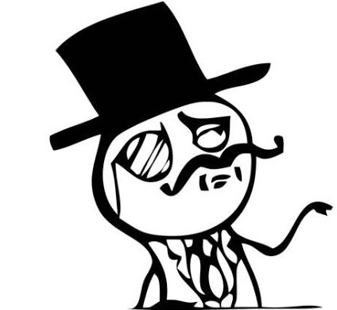

Motywacyjna strona internetowa>
 Szaleństwo to robienie ciągle tych samych rzeczy w oczekiwaniu różnych rezultatów.
Najtrudniejsze jest zdecydowanie się na działanie. Reszta to już tylko kwestia wytrwałości.
Twoje życie staje się lepsze tylko, kiedy Ty stajesz się lepszym.